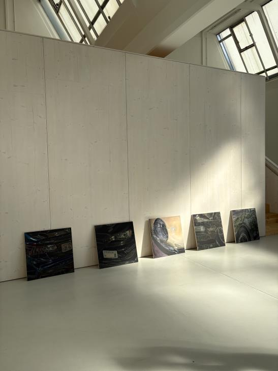
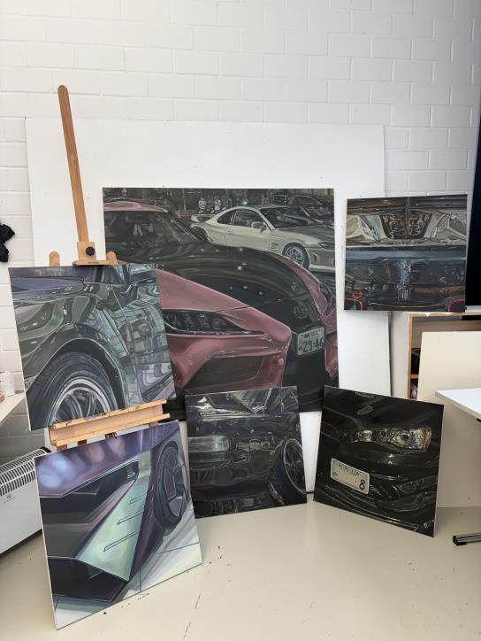

FOTOREALISTISCHE ÖLMALEREI
Licht auf
Lack.
Ein flüchtiger Reflex, ein Stück Straße, ein Moment zwischen Bewegung und Stille. Ich male Autos, wie ich sie sehe — voller Licht und Leben.
✳Jedes Werk von Hand gemalt.
Kein Druck. Kein Filter.
Kein Druck. Kein Filter.

01 / AKTUELLE ARBEITZwischen Licht und Linie
ÖL
AUF
LEINWAND
AUF
LEINWAND
REFLEXIONEN IN ÖL ✳ MOMENTE AUF RÄDERN ✳ LICHT, DAS BLEIBT ✳ REFLEXIONEN IN ÖL ✳
AUS DEM ATELIER
Ausgewählte Arbeiten

DIE KUNST DES HINSEHENS
Ich male nicht
das Auto. Das Licht.
Glanz auf Metall. Farben, die sich in einer Karosserie spiegeln. Die kleinen Spuren einer Reise. In meinen Bildern wird aus Technik ein Gefühl.
Mehr über mich ↗UNTERWEGS GEFUNDEN
Orte, die bleiben.
Von Daikoku bis Dessau — jede Serie hält einen Ort und seinen ganz eigenen Rhythmus fest.